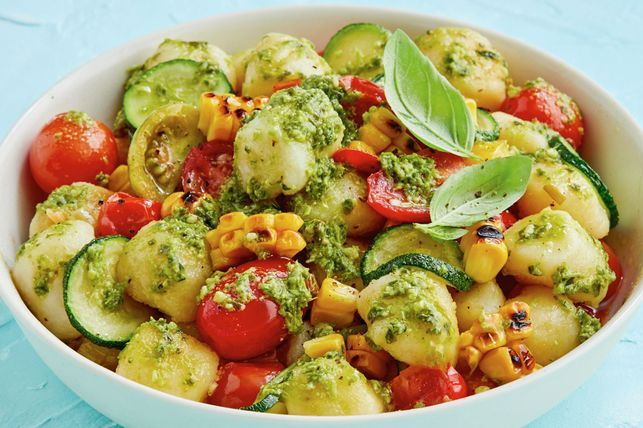

Vegan Pesto Gnocchi

Mouth-watering fluffy gnocchi with pesto (vegan, of course!)
Who doesn't like pillowy gnocchi served with vegan pesto and tons of veggies? A monster, that's who. If you're
not a monster, keep reading to unlock the secret to heavenly meals beyond belief.
Ingredients
- 2 corncobs
- 1/3 cup extra virgin oil
- 1 leek, thinly sliced
- 3 garlic gloves, finely chopped
- ~10 cherry tomatoes, halved
- 2 zucchini, sliced
- 500g packet vegan potato gnocchi
- 1/2 cup vegan pesto
- Salt to taste
Steps
- Heat a chargrill pan on high heat. Lightly brush the corn with some of the oil. Grill the corn, turning
often, for 10 minutes or until charred. Set aside for 3 minutes to cool slightly. Use a sharp knife to cut
down the length of the cob close to the core to remove the kernels.
- Meanwhile, heat 1 tablespoon remaining oil in a large non-stick frying pan over high heat. Add the leek and
garlic. Cook, stirring often, for 2 minutes or until the leek has softened slightly. Add the remaining oil,
tomatoes and zucchini. Reduce heat to medium and cook, stirring occasionally, for 10
minutes or until the tomatoes have collapsed. Season well.
- While the sauce is simmering, cook the gnocchi in a large saucepan of boiling water following packet
directions. Drain and return gnocchi to the pan.
- Add the tomato mixture and pesto to the gnocchi. Gently toss to combine.